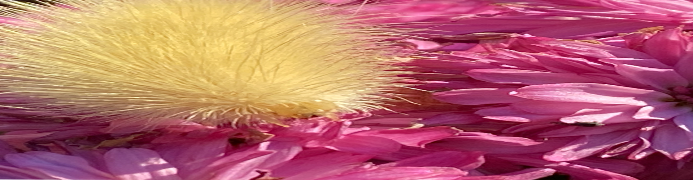

The Start
 At a young age, I loved the way nature and its creatures looked. From the blades of grass to the large creatures such as bears and elk. The tall peaks of mountains and the beautiful rivers that nature provides. I would often draw what I found to be interesting, especially wolves and cats. Though, as I got older, I leaned into photography. Taking images of what I see more clearly, expressing myself through what I found to be interesting or amazing.
At a young age, I loved the way nature and its creatures looked. From the blades of grass to the large creatures such as bears and elk. The tall peaks of mountains and the beautiful rivers that nature provides. I would often draw what I found to be interesting, especially wolves and cats. Though, as I got older, I leaned into photography. Taking images of what I see more clearly, expressing myself through what I found to be interesting or amazing.
It started with clouds, different views of sunsets, sunrises, occasionally the night sky. The variety of colors that the sky can provide is incredible, with some bringing the feel of nostalgia, the feeling of happiness, or the feeling of excitement. What I saw were different feelings and memories tucked away into those clouds, and wanting to remember that moment through a picture.
Little Memories
I find pictures ways for me to remember easily. Forgetting is something that I find often happening to me, even for things such as large events. So to rememeber better, I take pictures of different things I find worth remembering. Such things as even my dog on a random day or a pretty little bug can be something I wish to remember seeing.
Life is not always the big things, the little things in life are the things that can make it amazing.Or rather, that's what I believe it to be about. For me, when I look back at these little pictures, they often make me smile. A picture of a mountain, a memory of a fun time with family. A little blurry image of a rabbit, a memory of excitement and happiness playing with a pet.
Now
 As of today I still take pictures to remind me of things. I want to make sure that things that occured in the past are not forgotten in the future. Especially of those of family, friends, pets, and such other beings. I am thankful for the pictures of my relatives, sometimes it feels like I'm meeting them face to face. For those who did not get pictures, I feel sadden that I will never be able to see their faces or meet them. So again, view the world through even the smallest of things, as it can make life more memoriable. That is how I see the world through my lens.
As of today I still take pictures to remind me of things. I want to make sure that things that occured in the past are not forgotten in the future. Especially of those of family, friends, pets, and such other beings. I am thankful for the pictures of my relatives, sometimes it feels like I'm meeting them face to face. For those who did not get pictures, I feel sadden that I will never be able to see their faces or meet them. So again, view the world through even the smallest of things, as it can make life more memoriable. That is how I see the world through my lens.
I am glad to be able to share some of my memories here. As we continue on with this blog, I will share images of memories that I wish to share with others and hopefully make some days feel better.